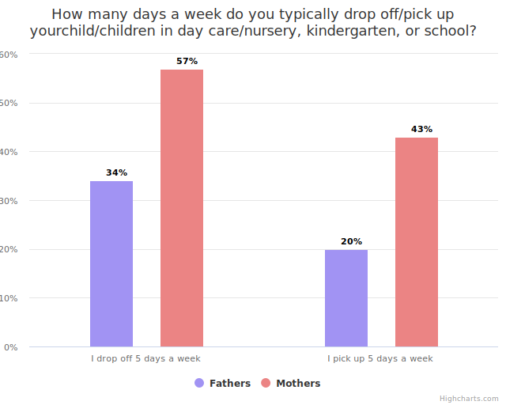

Mum Drops off the Children and Earns Part-Time Money
Written by Sif Høg-Getgood, 02/06/2024
The Danish academics' trade magazine, DM Akademikerbladet, recently published an article presenting new quantitative data on the difference between mothers' and fathers' engagement in caretaking tasks. The data confirmed that mothers more often than fathers drop off and pick up children from day-care facilities, reflecting norms of traditional expectations around caring responsibilities within families (Siegumfeldt 2024). Why am I writing about this on a blog about urban culture and city development? Because available transportation options in the city environment amplify the consequences of this uneven division of childcare tasks.
What did DM Akademikerbladet find?
In February and March 2024, DM Akademikerbladet had the data-gathering company, Norstat, ask 1,010 parents with children the age 0-6 about how often which parent drops off and picks up the children of the household. The results showed that more than twice as many mothers (43%) as fathers (20%) pick up children every workday.
(Siegumfeldt 2024)
The senior researcher, Mette Verner, from The Danish Center for Social Science Research comments on this distribution of labour:
When the daily caregiving tasks predominantly fall on one person, it inevitably leaves a mark. If you have to arrange your work-life every day to leave in time to pick up the children, many end up feeling inadequate, both at work and at home. This can also be an explanation for why it is primarily women who work part-time,
The Challenge of Getting to Work
In her book Feminist City, the geographer Leslie Kern outlines how urban planning draws on an assumed typical urban citizen’s daily travel plans, needs, desires, and values, and she argues that planners assume this typical citizen to be a "breadwinning husband and father, able-bodied, heterosexual, white, and cis-gender." These assumptions lead to the planned urban spaces and mobility options that neglect groups of citizens that do not fit into the cluster of assumptions of the typical one (Kern 34, 2021).
Kern highlights that transportation systems are most often planned to deliver trips with few stops and detours to the typical rush hour commuter from his home to his workplace; hereby overlooking those whose transportation needs diverge from the needs of the assumed typical commuter. These transport systems specifically do not cater effectively to the needs of parents who commute to the day nurseries before and after going to the locations where they carry out paid labour (Kern 34-5, 2021): these double shifts that DM Akademikerbladet confirms are carried out predominantly by mothers.
Referring to the Canadian-based geographer Gerda Wekerle’s research on the turns in gender-equal transit planning of the Toronto Transit Commission (Wekerle 291, 2005), Kern argues that women often have more complex commutes because of the frictions between paid and unpaid work that is amplified by inadequate transport routes (Kern 35, 2021). Analysing survey data from 16,000 individuals during a time of political debates in the 1980s on who the public transit services should accommodate, Wekerle "found substantial gender-based differences in the travel patterns of suburban residents. Due to their lack of mobility, women, particularly single mothers, were at a disadvantage in terms of access to jobs" (Wekerle 278, 2005).
The survey ordered by DM Akademikerbladet provides up-to-date data on the issues of inequality between mothers and fathers in a Danish context, confirming the premise that women more often drop off and pick up children in day-care facilities, which causes longer and potentially more expensive daily travels, and eventually puts mothers at a disadvantage in the workforce.
In closing this blog post, I want to thank DM Akademikerbladet for initiating the survey and bringing fresh data to the table in a Danish context. I have not been able to extract data myself about differences in commute patterns between mothers and fathers. Therefore, I would like to encourage more surveys specifically on mobility disparities, as well as encourage more knowledge about disadvantages in transport systems of other groups that fall outside the typical cluster: people that are Queer, disabled, or not White.
Maybe we can build a city where the public transport system supports equal pay.
References
- Kern, Leslie. 2021. Feminist City: Claiming Space in a Man-made World. New York: Verso.
- Siegumfeldt, Pernille. 2024. "Mor står stadig i børnehaven de fleste eftermiddage." DM Akademikerbladet, 23rd of May, 2024. https://dm.dk/akademikerbladet/aktuelt/2024/maj/mor-staar-stadig-i-boernehaven-de-fleste-eftermiddage/.
- Wekerle, Gerda R. 2005. "Gender Planning in Public Transit: Institutionalizing Feminist Policies, Changing Discourse, and Practice." In Gender and Planning: A Reader, edited by Susan S. Fainstein and Lisa J. Servon, 275-95. New Brunswick: Rutgers University Press.
* "Når afviklingen af en daglig omsorgsopgave overvejende ligger hos den ene, kan det ikke undgå at sætte sig spor. Hvis du hver dag skal tilrettelægge dit arbejdsliv, så du kan gå i tide til at hente børn, ender mange med at føle sig utilstrækkelige, både på jobbet og hjemme. Det kan også være en forklaring på, hvorfor det primært er kvinder, der går på deltid," (Siegumfeldt 2024).